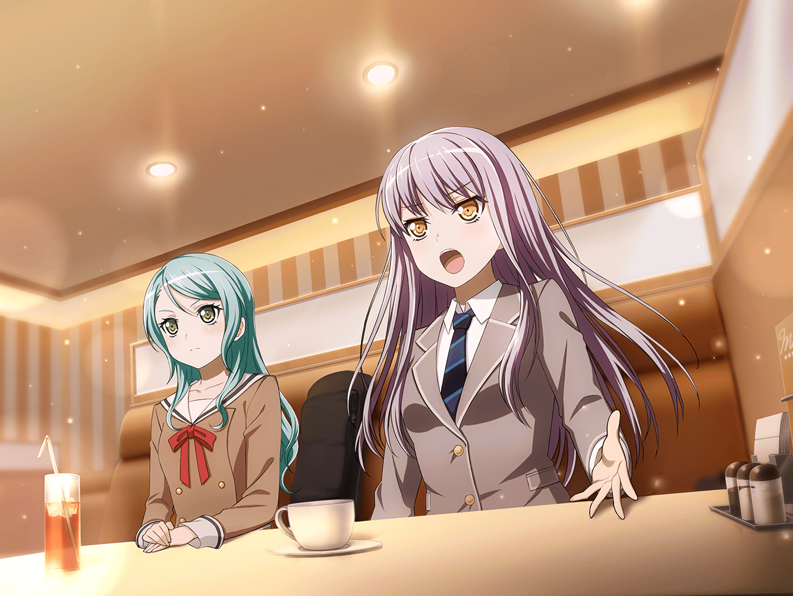

友希那
…………
紗夜
…………
紗夜
湊さん。なぜ私たちは
こんな所に来なければならないの？
友希那
あこが補習になって
練習に間に合わないからよ
友希那
スタジオの時間はリサがずらしてくれたわ
紗夜
確かにスタジオよりここの方が
あなた達の学校には近いでしょうけど、
他にもっとまともな場所は……
店員
いらっしゃいませ。ご注文はお決まりですか
友希那
あ。ドリンクバー２つ
店員
申し訳ございません。
ドリンクバーは単品ではご注文いただけない
システムになっておりまして
友希那
外であこ達を待つ？
紗夜
もう入ってしまったし
そういう訳にもいかないでしょう
友希那
なら、私はこのサラダを
紗夜
私……は、このポテトを
店員
はい。ご注文繰り返させていただきます。
ドリンクバー２つとサラダ、
特盛超お得ポテトですね。少々お待ちください
友希那
……紗夜。あなた、添加物は苦手……
紗夜
私じゃないわ。白金さんはともかく、
あの２人はこういう生産地も不明で
何日使っているかもわからない油で揚げた
紗夜
化学調味料まみれのものが
いかにも好きそうじゃない。
だから先に注文しておいてあげただけよ
友希那
でも冷めてしまうんじゃ
紗夜
Roseliaのメンバーでありながら、
赤点をとるなんて許されない。
冷めたポテトが丁度いいわ
友希那
確かに、あこはいくら最年少だからと言って、
もっと自覚を持つべきね。練習中も私語が多い
紗夜
今井さんが宇田川さんを乗せるでしょう。
あれも問題よ。
そうやって甘やかすからいつまで経っても……
友希那
燐子は自分から注意できるタイプではないし。
そこも改善点ね
友希那
前回、一度キメが
合わなかったけれど、
日々の集中の積み重ねがああ言う時に響く
友希那
クオリティの底上げの為にも、
やはりもっと全員音楽に集中を……
紗夜
ええ。
でも……演奏が一度始まれば……
友希那
あこもリサも、燐子も……
集中力は時に、私達より……
紗夜
今井さんも、宇田川さんに話しかける時は必ず
フレーズ練習しているのよね
喋らずにやればもっと効率がいいのに
友希那
あこも話しながら、
器用に課題曲を流してリズムをとっているし
こっちも黙った方が効果がありそうだけど
紗夜
白金さんは２人にかまわず、
ひたすら、運指に没頭しているし……ね
友希那
余計なことは多いし、失敗も多い。
……不器用だけど
いつもみんな、楽器を離さない
紗夜
まるで、分身みたいに
友希那
それなりに……
紗夜
良い部分も……
友希那・紗夜
…………！
紗夜
湊さん、あなた
課題だらけのバンドに何を
友希那
紗夜、あなたこそ。
本当に頂点を目指す覚悟はあるの？
店員
お待たせしました、サラダと特盛超お得ポテトです。
お客様、ドリンクバーはセルフサービスですが……
紗夜・友希那
そうなの？
友希那
こういうところはあまり来ないから
紗夜
調子が狂うわ
あこ
ごっ、ごめんなさいっ、遅れて！
もう絶対補習にならないように気を付けますっ
……って！
あこ
わーっポテト大盛り！ やったーー！！
燐子
こんにちは……
あこ
わーい！ いただきますっ
友希那
あこ。その前に。
本当にもう二度と補習にならないんでしょうね
あこ
も、もちろんですっ！
あこ
…………
紗夜
なに？ 不躾に他人の顔を見て
あこ
もぐ、えっと……紗夜さん、さっきから
ずっとポテト見てるのに、
なんで食べないのかなって
紗夜
わ、私は見てないわよ……っ
な、何を言っているの？
そ、そこまで言うなら少しくらい食べるわよ、もぐ
紗夜
も、もう少しだけ食べてもいいわよ、もぐ
友希那
（……もしかして、本当は好きなの？）
燐子
揚げたてで……美味しい……
リサ
ちょっとあこ、食べ過ぎ！ アタシの分は？
あこ
違うよ、紗夜さんだよ、
あとりんりんも
リサ
えっ。紗夜が！？
友希那
（色々課題は多いけれど……私はこのバンドが……）
リサ
ん？ どーしたの友希那、ぼーっとして
あこ
そういえばなんか言い合いになってたけど、
あこたちがくるまで何話してたんですか？
紗夜・友希那
……べつに